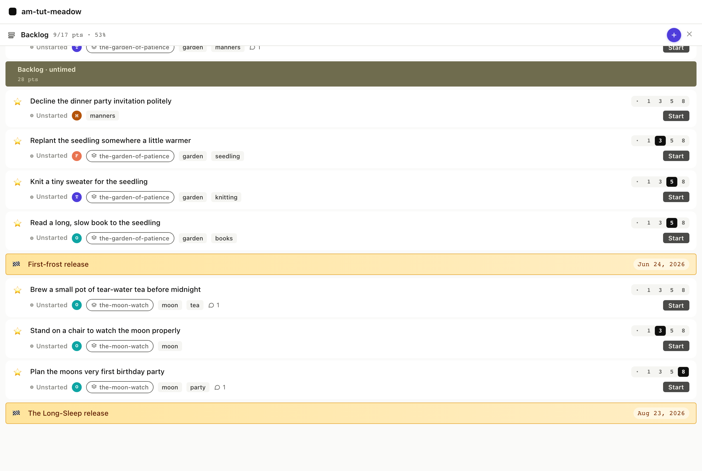
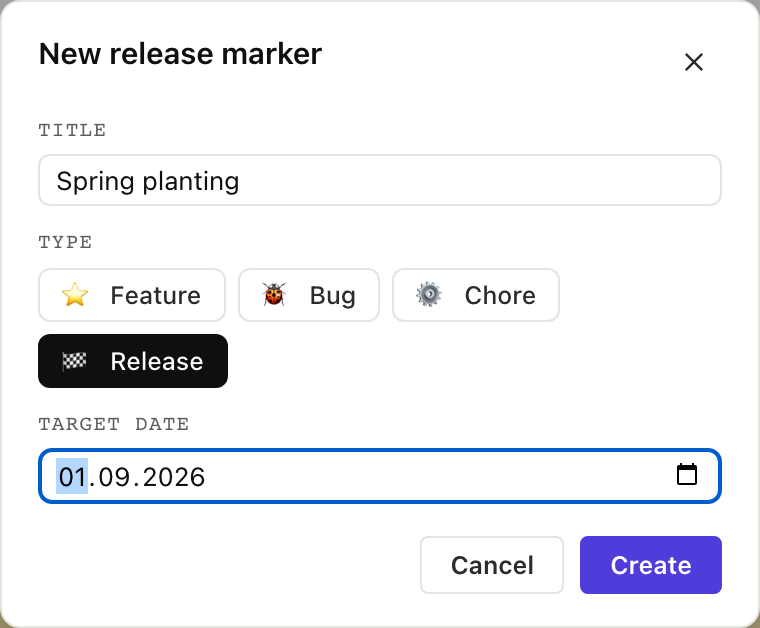

Release markers
7. Release markers
A release marker is a story with type: release and a
release_date, acting as a date stake in the priority list that
says "everything above this needs to ship by then."
The meadow fixture has two: First-frost (target Jun 17) and The Long-Sleep (target Aug 16, when Bear hibernates). They sit at meaningful seams, outdoor work above First-frost, indoor work above The Long-Sleep.
7.1 The marker in the backlog
In the board, release markers render as a horizontal amber bar with a checkered flag and the target date in a pill. They're visually distinct from story cards because they aren't stories.
Their position in the priority list determines whether the system
says they're on track or LATE. am show priority walks down the
list, accumulates points against velocity, and when it crosses
the marker's row asks whether the running iteration lands before
the release date: if so the marker is on track, otherwise it is
LATE.

$ am show priority --iterations 5
...
── Backlog (untimed) ──
★ Replant the seedling unstarted 3p
★ Knit a tiny sweater unstarted 5p
★ Read a long, slow book unstarted 5p
▶ First-frost release unstarted
on track: target 2026-06-17
★ Brew a small pot of tea unstarted
★ Stand on a chair unstarted 3p
★ Plan the moon's birthday unstarted 8p
▶ The Long-Sleep release unstarted
on track: target 2026-08-16
priority_list returns release markers in the same items array,
distinguished by type: "release" and a release_date field.
Full envelope
{
"jsonrpc": "2.0",
"method": "tools/call",
"params": {
"name": "priority_list",
"arguments": { "backlog": "stories" }
}
}
The on-track / LATE projection is rendered by iteration_view
which the agent calls explicitly when it needs the math; the raw
row in priority_list just carries the date.
Re-rank a story above First-frost and the projection might flip to LATE; agilemarkdown recomputes whenever the list changes.
7.2 Creating a release marker
In the New Story modal a fourth type chip 🏁 release reveals a
date picker when selected; submit the form and the new marker
lands in priority. From the CLI it takes three calls (create-item,
set-type, set-release-date):

$ am create-item "Spring planting"
created stories/spring-planting.md
$ am set-type stories/spring-planting.md release
spring-planting.md type=release
$ am set-release-date stories/spring-planting.md 2026-09-01
spring-planting.md release_date=2026-09-01
The web modal does the same three operations in sequence. The
MCP equivalent is two tool calls: create_item and
set_release_date (there's no set_type MCP tool, agents
edit the story file directly via set_description or via
the type-aware variants of other tools).
Full envelope
{
"jsonrpc": "2.0",
"method": "tools/call",
"params": {
"name": "create_item",
"arguments": { "backlog": "stories", "title": "Spring planting" }
}
}
then
{
"jsonrpc": "2.0",
"method": "tools/call",
"params": {
"name": "set_release_date",
"arguments": {
"path": "stories/spring-planting.md",
"release_date": "2026-09-01"
}
}
}
7.3 Shipping a release
The day the release ships, the marker gets accepted. On the bar,
once the target date is today or earlier, a green Ship button
appears. Click it; agilemarkdown stamps accepted: <now> and the
marker rolls into the Done panel at its actual
ship week. The CLI verb is just am accept.
$ am accept stories/first-frost-release.md
✓ status: accepted accepted_at: 2026-06-17T12:00:00Z
Shipping a marker is the same set_status call with
status: "accepted", run against the release item. Release stories
skip started/finished/delivered, so accepting one simply stamps its
ship date and rolls it into Done.
Full envelope
{
"jsonrpc": "2.0",
"method": "tools/call",
"params": {
"name": "set_status",
"arguments": {
"path": "stories/first-frost-release.md",
"status": "accepted"
}
}
}
The marker leaves the active priority view once accepted; next Monday it moves to Done. The ship date in Done is a fact and does not get recomputed when velocity shifts.